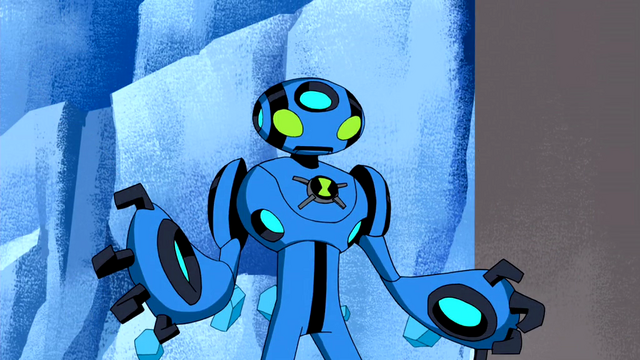

Espécie
Nome: Sonorosiano
Os Sonorosianos são seres cujo corpo funciona como um amplificador vivo de som, feito de silício (não
silicone, como alguns acreditaram por erro de tradução). Os Sonorosianos desenvolveram tecnologias avançadas
que
utilizam ondas sonoras para diversas aplicações, desde transporte até defesa.
Planeta
Nome: Sonorosia
Sonorosia é caracterizado por sua
paisagem vibrante e rica em recursos naturais que facilitam a produção e amplificação de sons. A atmosfera do
planeta é densa e repleta de frequências sonoras naturais, o que contribui para a evolução dos
Sonorosianos e suas habilidades únicas. A cultura em Sonorosia valoriza a música e o som como formas
essenciais de comunicação e expressão artística. A sociedade em Sonorosia é
organizada em torno de clãs que competem em torneios de som, onde os membros demonstram suas habilidades em
manipulação sonora. A arquitetura do planeta é projetada para maximizar a ressonância e a propagação do som,
criando uma experiência auditiva única para seus habitantes.
Poderes e Habilidades
Gritos sônicos
Eco Eco pode emitir gritos sônicos de alta intensidade que podem causar danos significativos a estruturas e
inimigos. Esses gritos podem ser modulados para diferentes efeitos, como desorientar adversários ou destruir
obstáculos, sobrecarregar máquinas e até parar projéteis em pleno ar.
Auto-multiplicação
Eco Eco tem a capacidade de se dividir em múltiplas cópias de si mesmo, cada uma capaz de agir
independentemente. Essas cópias podem trabalhar juntas para amplificar seus ataques sônicos ou realizar
tarefas simultâneas.
Ecolocalização
Eco Eco pode usar ondas sonoras para mapear seu ambiente, permitindo-lhe detectar objetos e
inimigos mesmo em completa escuridão ou através de obstáculos sólidos.
Barreira de som
Eco Eco pode criar barreiras de som que podem bloquear ataques físicos e energéticos, protegendo
a si mesmo e aos outros.
Atributos físicos aprimorados
Eco Eco possui força, velocidade e resistência superiores às de um humano comum.
Fraquezas
Apesar de seus poderes, Eco Eco não é muito resistente; suas cópias podem ser destruídas facilmente. Além
disso, ambientes sem ar ou com som abafado podem limitar suas habilidades de manipulação sonora. Embora útil,
dividir-se em muitas cópias pode deixá-lo vulnerável, já que cada clone é mais fraco individualmente.
Forma Suprema

blogspot.com
Eco Eco Supremo é uma forma evoluída de Eco Eco, onde suas habilidades sonoras são amplificadas a níveis
extremos. Nesta forma, ele pode emitir gritos sônicos que podem causar terremotos e tsunamis, além de
criar múltiplas cópias de si mesmo com ainda mais facilidade. Sua resistência e força também são
significativamente aumentadas. O corpo possui discos que podem ser lançados e controlados remotamente,
emitindo ondas sonoras devastadoras. Ele pode voar usando ondas sonoras para se propulsar. Consegue resistir
em ambientes extremos, incluindo o vácuo espacial. Diferente da forma básica, o Eco Eco Supremo não pode se
dividir em cópias. Grande parte de seu poder vem dos discos sônicos; se forem neutralizados, ele perde
vantagem.